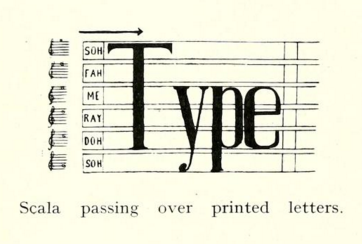

Thirteen Ways of Looking at a Technology
Tiffany Chan | U. of Victoria | @ElTiffster
signal/noise: FemTechNet DOCC conference | U. of Michigan
Saturday, Apr 9 | Hatcher Library Gallery
I.
How Does it Look, Sound, Feel, or Smell?

II.
Why is it old? How is it new?
IV.
How is it a "failure"?
V.
How is it a situation or relation?
VIII.
How is it transparent or obscure?
IX.
How is it signal or noise?
XI.
How is it reused, reduced, or recycled?
Thank You
Acknowledgements